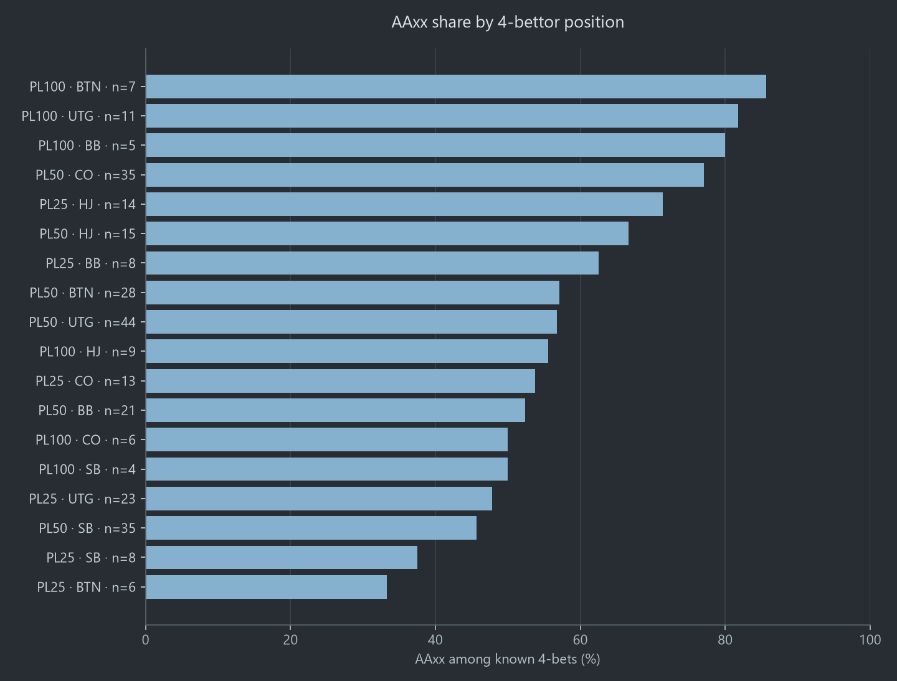
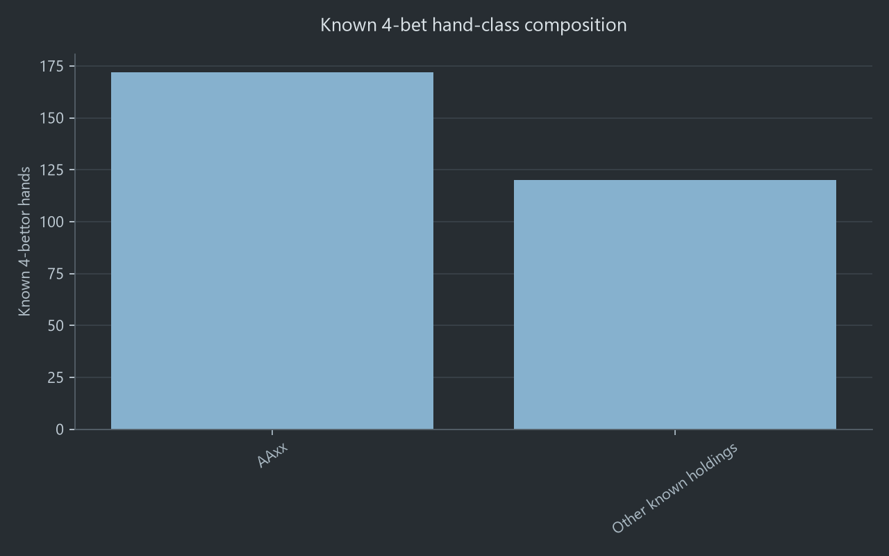

Four-bet report
Known hand composition and reveal coverage.
Position summary
| Stake | Position | 4-bets | Known | Reveal % | AAxx | AAxx % | Unknown |
|---|---|---|---|---|---|---|---|
| PL50 | ALL | 284 | 178 | 62.7 | 105 | 59.0 | 106 |
| PL25 | ALL | 118 | 72 | 61.0 | 38 | 52.8 | 46 |
| PL100 | ALL | 66 | 42 | 63.6 | 29 | 69.0 | 24 |
| PL100 | BB | 9 | 5 | 55.6 | 4 | 80.0 | 4 |
| PL100 | BTN | 10 | 7 | 70.0 | 6 | 85.7 | 3 |
| PL100 | CO | 12 | 6 | 50.0 | 3 | 50.0 | 6 |
| PL100 | HJ | 12 | 9 | 75.0 | 5 | 55.6 | 3 |
| PL100 | SB | 6 | 4 | 66.7 | 2 | 50.0 | 2 |
| PL100 | UTG | 17 | 11 | 64.7 | 9 | 81.8 | 6 |
| PL25 | BB | 15 | 8 | 53.3 | 5 | 62.5 | 7 |
| PL25 | BTN | 15 | 6 | 40.0 | 2 | 33.3 | 9 |
| PL25 | CO | 23 | 13 | 56.5 | 7 | 53.8 | 10 |
| PL25 | HJ | 17 | 14 | 82.4 | 10 | 71.4 | 3 |
| PL25 | SB | 15 | 8 | 53.3 | 3 | 37.5 | 7 |
| PL25 | UTG | 33 | 23 | 69.7 | 11 | 47.8 | 10 |
| PL50 | BB | 39 | 21 | 53.8 | 11 | 52.4 | 18 |
| PL50 | BTN | 42 | 28 | 66.7 | 16 | 57.1 | 14 |
| PL50 | CO | 53 | 35 | 66.0 | 27 | 77.1 | 18 |
| PL50 | HJ | 31 | 15 | 48.4 | 10 | 66.7 | 16 |
| PL50 | SB | 52 | 35 | 67.3 | 16 | 45.7 | 17 |
| PL50 | UTG | 67 | 44 | 65.7 | 25 | 56.8 | 23 |
AAxx % uses known / shown hands as its denominator.
Composition charts
AAxx by position

Known hand composition

Four-bet definitions
A four-bet is the third preflop raise. An all-in counts when it increases the amount to call. Hero is excluded in this report.
Known hand percentages use the revealed-card subset. Unknown hands remain in the coverage count.